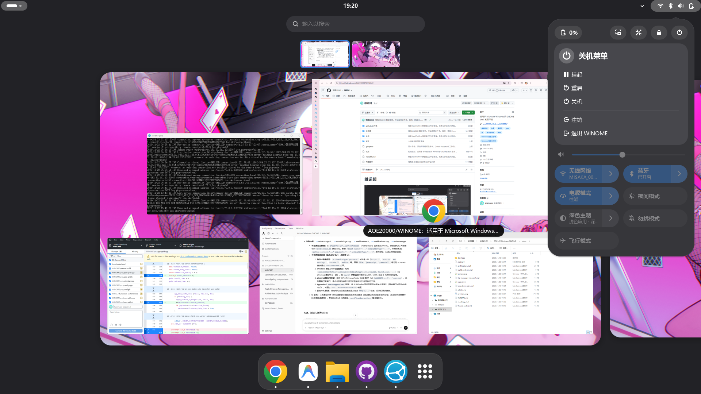

按下 Win 键，整个桌面在眼前舒展
向下滚动页面时，右侧背景正顺滑演示 WINOME 的活动概览动效：窗口自动缩放排布、工作区预览条滑入、每块屏幕底部同时升起 Dash 应用栏。
极速响应，告别壁纸闪屏
打开概览时一次性同步全部窗口与桌面状态，渲染就绪后多屏同步呈现，流畅跟手、不卡顿，彻底杜绝壁纸闪到窗口上方。
即打即搜，同步开始菜单分组
概览支持随时打断切换至分页应用网格，直接键入即可搜索应用与已开窗口，并自动同步你的 Windows 11 开始菜单应用文件夹。
主屏与副屏共用同一套活动概览引擎，在任意屏幕都可直接搜索、拖拽整理窗口，并在底部使用完整的 Dash 应用栏。
打破全局切换限制，副屏三种模式随心选
Windows 默认只能所有屏幕一起切桌面。点击下方按钮，可在右侧背景动画中直接对比 WINOME 提供的三种多屏工作区模式：
内置独立切换（默认）：每个显示器拥有各自独立的工作区列表，切换屏幕 1 时完全不会打扰屏幕 2 的文档、终端或视频。
提供内置独立、仅主屏（支持在副屏选择时将其动态升格为主屏）以及全屏同步联动三种模式，且每块屏幕底部均保留完整 Dash。
忠实还原 GNOME 视觉，无缝融入 Windows
不止是活动概览——顶栏、双栏日历与通知中心、常用系统托盘图标、音量/亮度/Wi-Fi/蓝牙/电源快捷面板全部原生集成，并兼容 Wallpaper Engine 等动态壁纸。

直接以官方 GNOME Shell 样式表为视觉基准，结合样式转换与原生渲染引擎，确保间距、圆角与动效保持原汁原味。
像系统组件般顺滑，像普通软件般安全
绝不向系统核心进程注入代码，也不改动系统文件。内置独立看门狗守护进程，遇到任何异常都能在瞬间恢复 Windows 原生任务栏与全部窗口。
原生快捷键无冲突，全屏游戏零干扰
短按 Win 打开概览、双击进入应用网格，而 Win+E、Win+V、Win+Shift+S、Alt+Tab 等系统快捷键全部照常使用；进入全屏游戏或视频时，自动隐藏所在屏幕顶栏并关闭该屏热角。
安全隔离的插件扩展与快捷命令
支持在独立进程中运行的第三方扩展插件、Alt+F2 快捷命令框，以及面向开发者的实时调试控制台与命令行工具。
独立运行、不注入系统进程；启动时自带守护看门狗，正常退出或意外崩溃都会立即恢复原生任务栏与窗口状态。
直连项目文档，随时查阅最新架构与构建指南
官网不另存过期副本——所有技术文档均直接实时读取仓库中的 docs/ 目录，方便开发者快速上手构建或参与贡献。
准备 MSYS2（UCRT64 + GTK4）环境后，运行仓库根目录的 ./build.sh release 即可编译约 2.8 MB 发布版并一键打包绿色便携包。
解压即用，随时回到原版 Windows 桌面
无需安装向导，也不需要额外安装运行库。下载解压 WINOME-win64-portable.zip 后运行 winome.exe 即可体验；想卸载时直接删除文件夹即可。
# 立即恢复 Windows 原生任务栏与工作区（也可直接双击目录中的 restore-taskbar.bat） winome.exe --restore # 以安全模式启动（跳过第三方插件与窗口外观美化） winome.exe --safe-mode
使用 WINOME 会破坏 Windows 或导致任务栏找不回来吗？
不会。WINOME 绝不改动系统文件，也不会注入系统进程。它只在运行时临时隐藏原生任务栏，正常退出或意外崩溃都会由守护进程自动还原，目录中还附带了一键恢复脚本 restore-taskbar.bat 兜底。
在副屏 2 选择「仅主屏（GNOME 模式）」会发生什么？
副屏 2 会立即成为当前的 Shell 主屏：切工作区时只切换屏幕 2、保持屏幕 1 的窗口静止不动，且两块屏幕在概览底部都保留完整的 Dash 应用栏；如有需要，也可以在设置中开启「同时切换 Windows 系统主显示器」。
为什么需要管理员权限？会收集个人数据吗？
管理员权限仅用于隐藏原生任务栏，以及在切换工作区时正常管理以管理员身份运行的窗口。WINOME 完全离线运行、没有任何数据上报，所有设置与日志都只保存在本地 %LOCALAPPDATA%\WINOME。